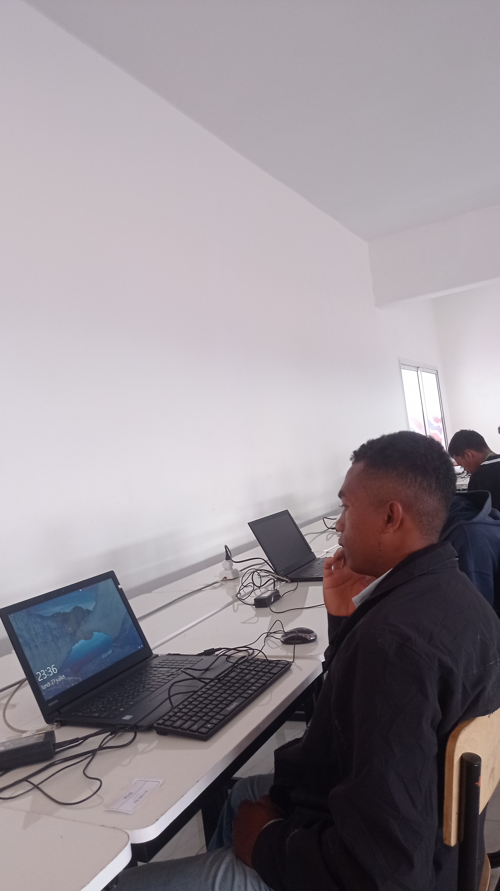

Développer mes compétences
Approfondir mes connaissances en programmation, bases de données et conception logicielle.
Découvrez mon profil, ma formation en informatique et les objectifs qui orientent mon parcours.

Je suis étudiant en Informatique, dans le domaine du Génie logiciel. Je m'intéresse particulièrement à la conception et au développement d'applications, à l'administration des réseaux et à la cybersécurité.
À travers les travaux pratiques et les projets personnels, je cherche à consolider mes connaissances et à progresser dans la réalisation de solutions informatiques utiles.
Me contacter →Approfondir mes connaissances en programmation, bases de données et conception logicielle.
Mettre en pratique mes acquis pour analyser des besoins et proposer des solutions adaptées.
Continuer à apprendre et gagner de l'expérience dans les domaines qui me passionnent.